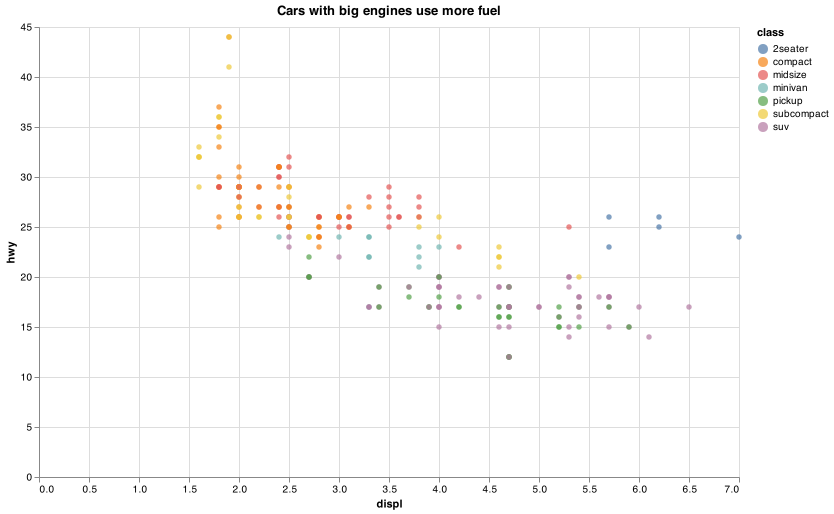

Course CSE 250 Isabel Aranguren
The purpose of this assignment is to teach you how to set up our enviroments and visualise data using Altair, the document is proof that the setup was successful and the readings were completed
This document is proof that the enviromment is working smoothly and that all the readings were completed

print(mpg
.head(5)
.filter(["manufacturer", "model","year", "hwy"])
.to_markdown(index=False))
| manufacturer | model | year | hwy |
|---|---|---|---|
| audi | a4 | 1999 | 29 |
| audi | a4 | 1999 | 29 |
| audi | a4 | 2008 | 31 |
| audi | a4 | 2008 | 30 |
| audi | a4 | 1999 | 26 |
#%%
import pandas as pd
import altair as alt
# data import
url = "https://github.com/byuidatascience/data4python4ds/raw/master/data-raw/mpg/mpg.csv"
# Reads csv file
mpg = pd.read_csv(url)
# Stores JSON data
alt.data_transformers.enable('json')
#Creates chart
chart = (alt.Chart(mpg)
.encode(
x = "displ",
y = "hwy",
color = "class"
)
.mark_circle())
chart.save('chart.png')
# Prints the table
print(mpg
.head(5)
.filter(["manufacturer", "model","year", "hwy"])
.to_markdown(index=False))